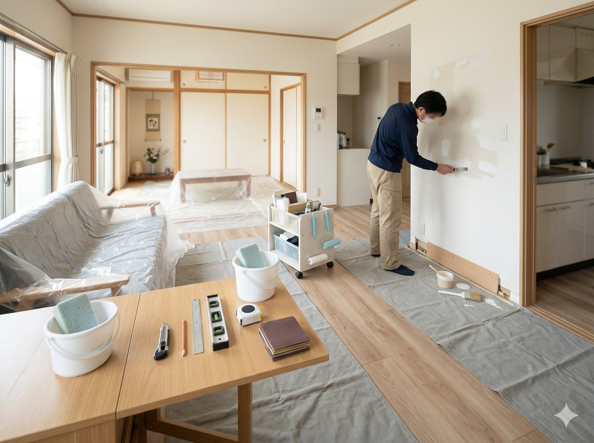

EXTERIOR

外壁塗装・屋根塗装（蒲郡市・三河エリア対応）
住宅の外壁・屋根は、10〜15年を目安に塗り替えが必要になります。適切なタイミングでのメンテナンスが、建物の寿命を大きく左右します。
KANEXでは、法人施設の外壁・屋根塗装で培った技術を活かし、一般住宅にも丁寧に対応します。
リフォーム・外壁塗装・解体に関するお役立ち情報をブログで公開しています。
お役立ち情報を見る株式会社カネックスは、愛知県蒲郡市を拠点に、一般住宅のリフォーム、外壁塗装、屋根塗装、内装補修、小規模解体、撤去工事に対応しています。
蒲郡市を中心に、形原町、三谷町、竹谷町、西浦町、大塚町、豊岡町など、周辺地域で住まいの塗り替えや補修をご検討の方は、まずはお気軽にご相談ください。
法人施設の改修工事で培った現場対応力を活かし、ご家庭のリフォーム・塗装・解体にも丁寧に対応いたします。
住まいのさまざまなご要望に対応いたします。
住宅の外壁の塗り替え・補修。ひび割れ補修から仕上げ塗装まで一括対応します。
屋根材の劣化・色あせの塗り替え。適切な下地処理と塗装で耐久性を回復します。
壁・天井の補修から内装仕上げ変更まで。生活しながらの施工も相談できます。
ひび割れ、汚れ、剥がれなどの部分補修。気になる箇所から対応します。
浴室、洗面台、トイレ周辺の壁や床の補修・改修工事に対応します。
不要な倉庫、物置、ブロック塀、古い設備などの解体・撤去工事に対応します。蒲郡市周辺の撤去工事もお気軽にご相談ください。
庭の樹木伐採・撤去、フェンス・門扉の撤去、外構部分の解体に対応します。
経年劣化した箇所の補修・修繕。見落としがちな小さなトラブルもご相談ください。
上記以外でも、住まいのご要望をお聞きしてご対応できるか確認いたします。
住宅の外壁・屋根は、10〜15年を目安に塗り替えが必要になります。適切なタイミングでのメンテナンスが、建物の寿命を大きく左右します。
KANEXでは、法人施設の外壁・屋根塗装で培った技術を活かし、一般住宅にも丁寧に対応します。

室内の壁・天井の補修や塗り替え、内装リフォームに対応します。生活空間を維持・改善するための工事をサポートします。

不要な構造物の解体・撤去から、老朽化した設備の取り除きまで対応します。庭や外構まわりの撤去も承ります。
まずはお気軽にお問い合わせください。
フォームまたはお電話でご連絡ください。工事の種類・場所・大まかなご要望をお伝えください。
ご連絡いただいた内容をもとに、詳細をお聞きします。
規模や状況によって、現地での確認・採寸を行います。
工事内容・費用のお見積もりをご提示します。
お見積もり内容をご確認いただき、ご納得いただいた上で工事を進めます。
丁寧な施工をお約束します。完了後にご確認いただきます。
各工事についての詳しい情報はこちらをご覧ください。